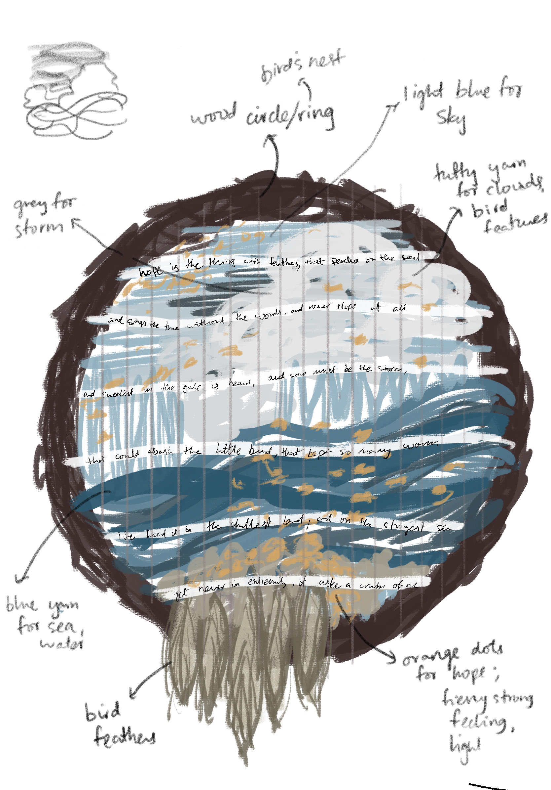

Archive
Hope

Inspired by the poem ‘Hope’ by Emily Dickinson; an ode to optimism, symbolizing hope as a bird living within the human soul. One of my favorite poems, I wanted to physically translate the strong emotion of hope it elicits; weaving the scene I envisioned when reading the poem, through a wooden ring. The ring reminds me of a bird’s nest- combined with my scene of a stormy landscape, and the actual lines of the poem woven through my loom- it is a textile portrayal encompassing textual references.
Idea development
